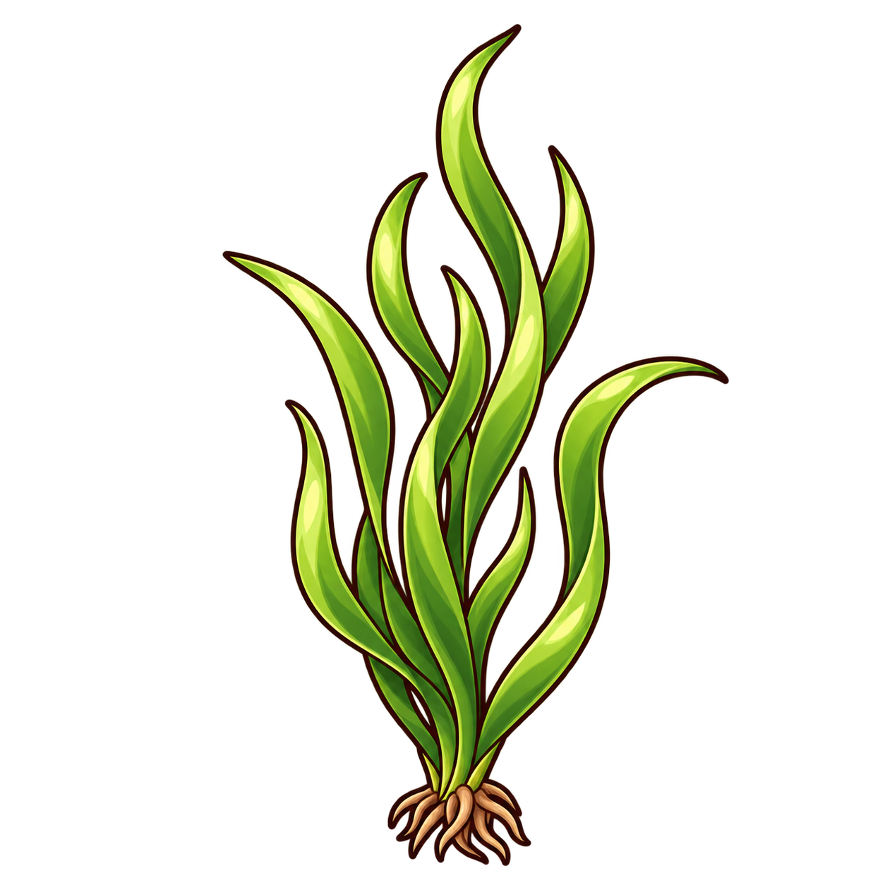
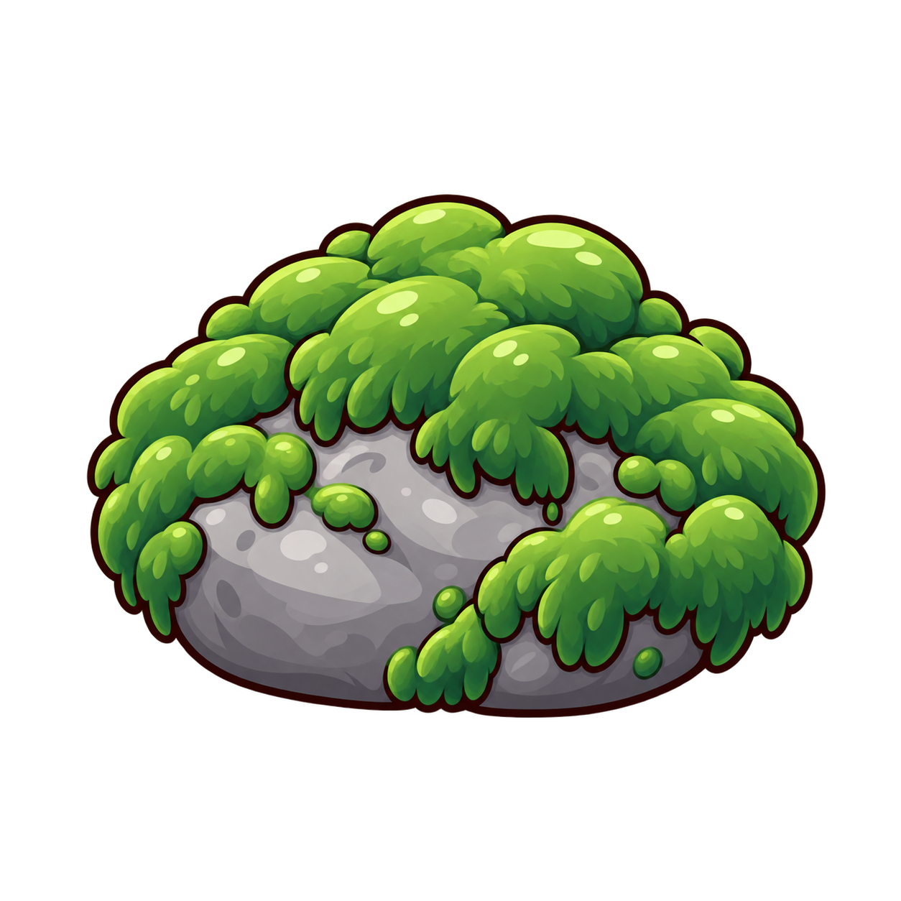
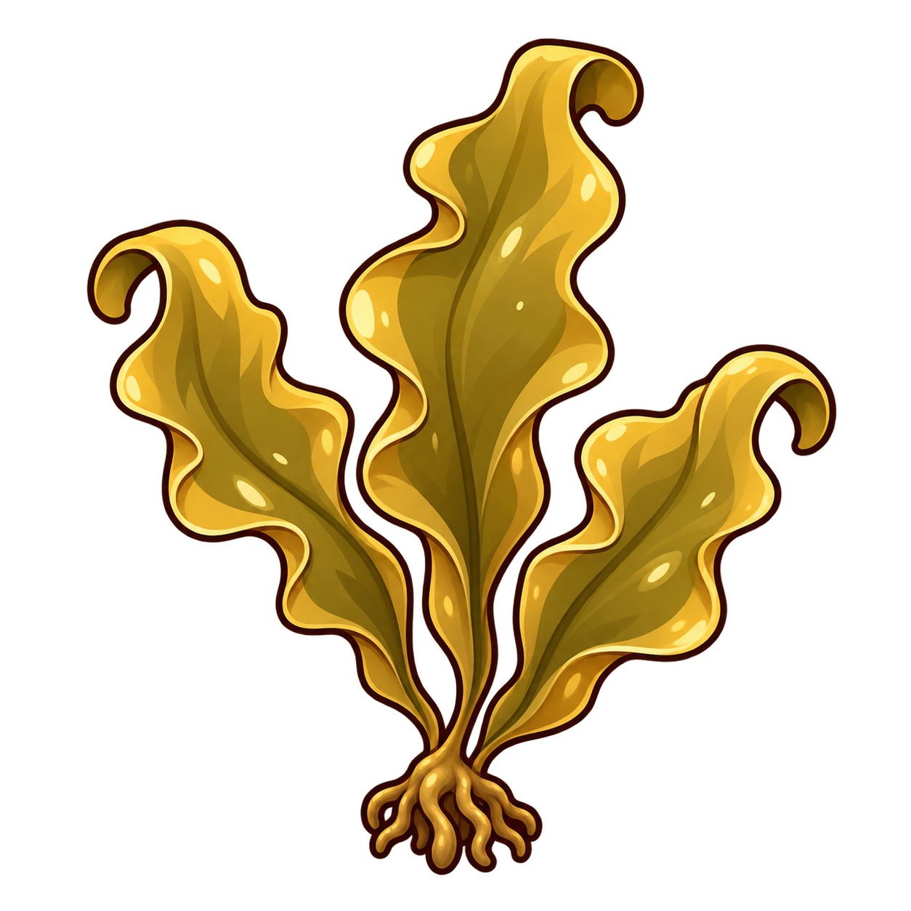
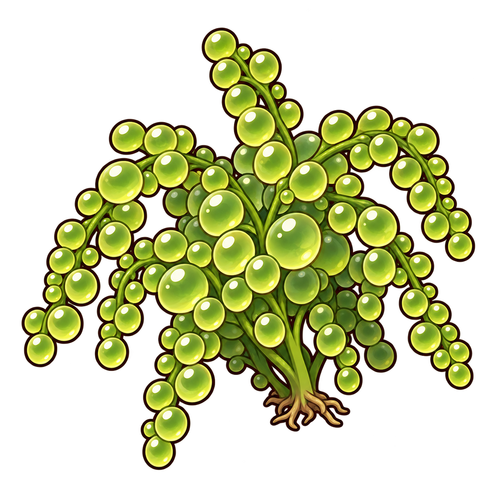
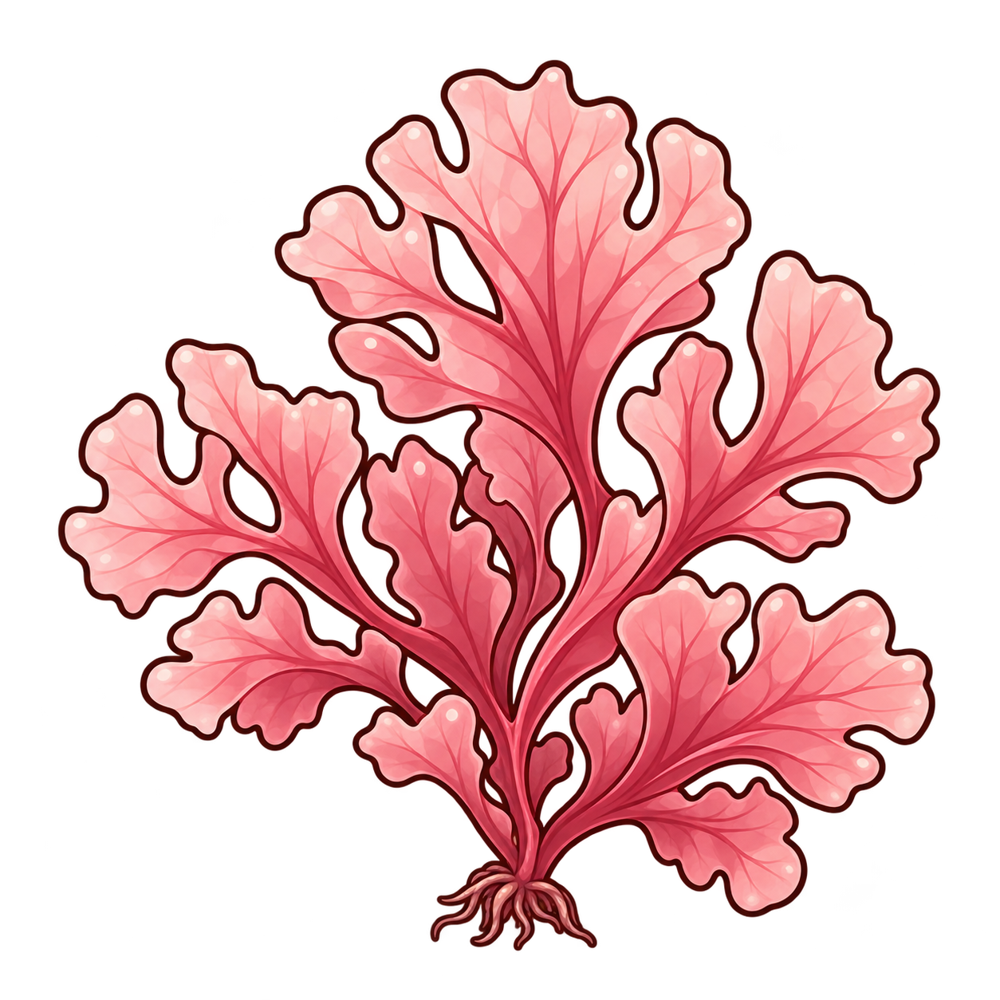
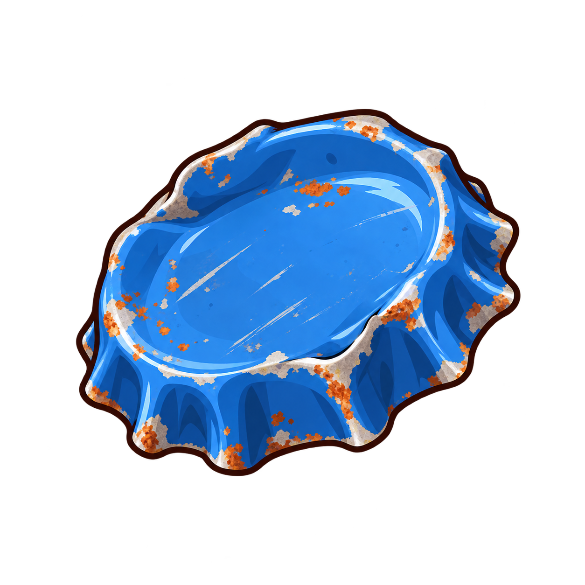
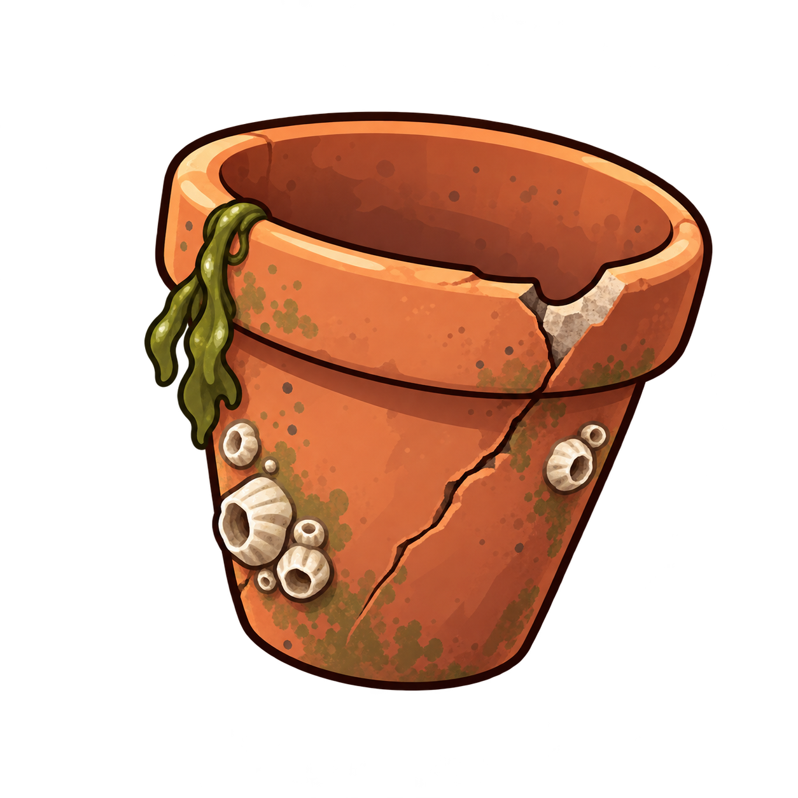

리본 잘피

common / decoration
가늘고 긴 초록 잎이 리본처럼 휘어진다. 작은 물고기가 잠깐 숨을 고를 수 있는 초록 그늘을 만든다.
조약돌 바다이끼

common / decoration
둥근 조약돌 위로 보드라운 초록 이끼가 내려앉았다. 바닥 한편에 작은 풀밭을 만들어 준다.
꼬불 미역

common / decoration
넓적한 올리브빛 잎 끝이 꼬불꼬불 말려 있다. 한 줄기만 놓아도 작은 바다에 풍성한 숲이 생긴다.
진주알 바다포도

rare / decoration
가는 줄기마다 맑은 민트빛 방울이 송골송골 맺혀 있다. 빛을 받으면 작은 진주알처럼 은은하게 반짝인다.
장밋빛 부채해초

rare / decoration
장밋빛 잎이 얇은 부채처럼 겹겹이 펼쳐진다. 잎맥 사이로 스며드는 물빛이 어항에 부드러운 색을 더한다.
녹슨 병뚜껑

common / trash
푸른 칠이 벗겨진 병뚜껑. 가장자리의 작은 녹 자국에 바다를 떠돈 시간이 남아 있다.
금 간 꼬마 화분

common / trash
모서리가 깨진 작은 토분. 흙 대신 모래가 조금 남아 있고 금 간 틈에는 해초 한 줄기가 걸려 있다.